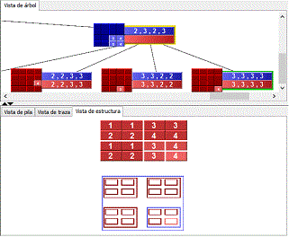

El árbol de activación puede mostrarse colapsado o con su amplitud máxima. Al mostrarse colapsado, los nodos permanecen siempre juntos mientras se va desarrollando la animación del árbol, a la par que la dimensión del árbol va creciendo. Por contra, al mostrar los árboles con su amplitud máxima los nodos permanecen siempre en el mismo lugar dando una mejor idea de cómo de grande seráel árbol cuando finalice la animación.
|
El manejo de visualizaciones de algoritmos diseñados bajo la técnica de Divide y Vencerás incluye nuevas vistas y algunas funcionalidades nuevas que se describen a continuación. La vista del árbol permite incorporar en aquellos nodos que representen métodos que contienen un algoritmo diseñado bajo esta técnica una visualización esquemática de la estructura de datos que representa la parte sobre la que opera el algoritmo en cada caso y los valores de entrada o salida que existen en tal subllamada. La activación o desactivación de esta funcionalidad se realiza mediante la opción Visualización / Mostrar estructura en la vista de árbol. |
 |
Los algoritmos de Divide y Vencerás cuentan con dos representaciones más, la vista cronológica y la vista de la estructura. La primera de ellas permite algunas opciones de configuración.
En primer lugar, se puede escoger entre ver en esta vista la estructura completa en cada paso con la parte sobre la que actúa el algoritmo resaltada o ver sólo ésta parte, para abstraerse mejor. Para hacer aparecer o desaparecer la parte de la estructura no manejada en cada subllamda, basta seleccionar la opción Visualización / Mostrar estructura completa en la vista cronológica.
Por otra parte, se pueden representar los resultados parciales de manera estrictamente cronológica o bien manteniéndolos ligados a la entrada de la subllamada en la que se obtuvieron. Cada modalidad de visualización aporta unas ventajas diferentes, por lo que es cuestión del usuario emplear una u otra en cada momento. Para activar cada modalidad, basta seleccionar la opción Visualización / Mostrar la salida ligada a la entrada en la vista cronológica.
__________
2.5. Cómo utilizar las visualizaciones - 2.7. Información de las visualizaciones